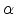
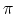
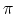

TRobots Inc. fabricates and maintains touring robots. Every touring robot visits places in a Cartesian plane scene to accomplish its tasks. A task of a robot is a sequence of at least two points the robot must visit in a tour according to the following rules:
- the robot starts at the first point of the task, facing the second one;
- the robot moves in the direction it faces;
- upon arrival to a point in the sequence, the robot turns counterclockwise an angle 
, satisfying
0
 < 2
, until it faces the next point in the sequence (convention: the first point in a sequence is considered the following one for the last point in the sequence);
< 2
, until it faces the next point in the sequence (convention: the first point in a sequence is considered the following one for the last point in the sequence);
- the robot ends at the first point of the sequence, facing the second one.
As a net result of a tour, a robot completes an integer number of turns. TRobots Inc. finds the number of turns important as this number determines when a robot needs maintenance. Your job is to help TRobots Inc. calculating the number of turns a robot completes for a given tour.
The input consists of several cases, each one comprising a set of lines with data that defines a task for a robot. A task for the robot is described by several input lines:
- the first line defines the size N
of the task, an integer satisfying
1 < N < 1000
and representing the number of places the robot must visit in the tour;
- each of the following N
lines has a pair of integer values, representing the Cartesian coordinates (x, y)
of a point to visit in the tour (
-106
 x, y106
). It is guaranteed that each pair of consecutive points (considering the sequence as a circular list) are different.
x, y106
). It is guaranteed that each pair of consecutive points (considering the sequence as a circular list) are different.
The end of the input is given by N = 0
.
For each given case, output one line with the number of turns a robot completes for the given tour.
3
0 0
3 0
1 0
7
3 4
5 1
-2 -2
-2 2
-1 1
4 -1
1 -2
0
1
4
Colombia'2008